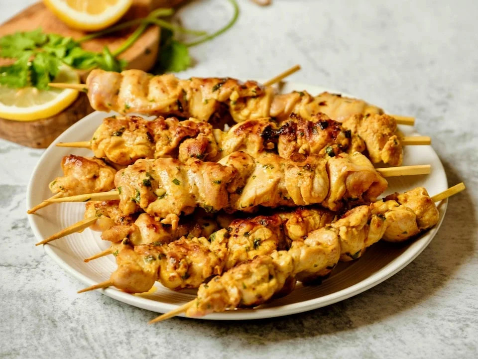

Meowscular Chef's Platter: Chicken Skewer

Image source
Delicious chicken skewers
Serves: 8-10
Ingredients:
- 2 lb or 1 kg boneless skinless chicken breasts or thighs
- 2 Tbsp oyster sauce
- 1 Tbsp cumin powder
Steps:
- Cut chicken into bite-size pieces and place them into a large bowl.
- Add oyster sauce and cumin then mix together.
- Skewer the chicken evenly then grill for 10-15 minutes, until cooked through.
Back to main